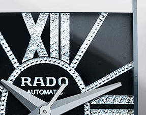

Качество часов
Рубрика "Евтотур" возвращается. По окончании каждого тура европейской топ-пятерки чемпионатов портал ФНК будет подводить общие итоги, выделяя пятерку самых ярких событий в туре, а также составляя символическую сборную. В первой части мы предлагаем вам познакомиться с самыми яркими событиями прошедшего уикенда. Уже стартовали чемпионаты Франции, Англии и Испании. Поэтому материал для размышлений и замечаний уже "наигран". С ним и будем работать. В первой части первого выпуска сезона мы отметим силу воли "Лорьяна", невероятные приключения "Атлетика", сенсационный провал "Ливерпуля" и потери очков "Манчестер Юнайтед" и "Реалом". 1. "Несгибаемая воля".
Рубрика "Евтотур" возвращается. По окончании каждого тура европейской топ-пятерки чемпионатов портал ФНК будет подводить общие итоги, выделяя пятерку самых ярких событий в туре, а также составляя символическую сборную. В первой части мы предлагаем вам познакомиться с самыми яркими событиями прошедшего уикенда. Уже стартовали чемпионаты Франции, Англии и Испании. Поэтому материал для размышлений и замечаний уже "наигран".
Вратарь: Андрей Дикань. Он попадает в эту сборную в нынешнем сезоне впервые. Однако заслужил это место и по предыдущим турам. Так что в совокупности – тоже. Дикань неоднократно выручал "Спартак", который в защите пока не может похвастаться стабильностью и высокой надежностью. Вот все огрехи обороны, в том числе в матче с "Рубином", спартаковский страж ворот подчищал и имеет большие основания считать свой вклад в эту победу весьма весомым.